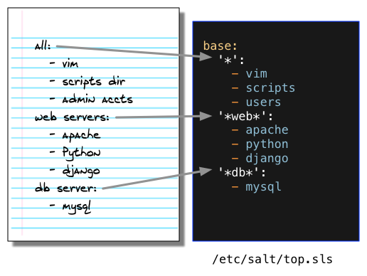

- Demo Environment
- Install
- Execute Commands
- Define Configurations
- Create Formulas
- Target Systems
- Apply States
- Next Steps
Define System Configurations
You'll learn how to:
- Create a top file to match systems with unique configurations
Estimated time: 15 minutes
Difficulty:
Configurations
Create a list of your configurations, and note the packages and files that make up that configuration.

These configurations are 'translated' to YAML and added to the top file to define your different systems.
YAML?
Salt uses a simple format, called YAML, to describe configurations. This is what you need to know:
- YAML uses a fixed indentation scheme to represent relationships between data layers. Salt requires that the indentation for each level consists of exactly two spaces. Do not use tabs.
- A dash represents an item in a list.
- Key value pairs are represented by key:value
Environments
See the 'base:' line at the root of top file? That line specifies the salt environment where the formula is located. We won't get into environments in this guide, but soon you'll want to define a few environments where you can set up different types of systems depending on where they are deployed. For example, 'apache' in a dev environment will likely need a different network configuration than in a production environment. Learn more in the docs.
Remote execution is a big time saver, but it has some shortcomings. Most tasks you perform are a combination of many commands, tests, and operations, each with their own nuances and points-of-failure. Often an attempt is made to combine all of these steps in a master shell script, but these quickly get unwieldy and introduce their own headaches.
Instead, SaltStack configuration management starts with the finished product. You describe exactly what the finished configuration looks like, and Salt makes it happen.
So forget about commands and scripts for a while, and think about what what your configurations look like. Consider the different types of systems you set up, and what is common and unique about each. Each system can receive multiple configurations, so start with the most general configurations and work your way down to the specifics.
After you have a few configurations defined, you are ready to describe those configurations in the Salt top file.
Introducing the Top File
The top file is used to describe your different system configurations, and specifies a set of tasks that Salt should apply to achieve that configuration.
To avoid confusion at this point, understand that the top file describes where and what, but not how. The how is described in a different file, called a Salt formula, that we’ll explain in the next section. For now just trust that ‘apache’ means that apache is installed, configured, and serving up your web pages.
Create your own top file
You are now ready to update the /etc/salt/top.sls file on your master with a representation of each of your configurations. Configurations are described using YAML, and are simple to create and read.
The following example shows how a set of abstract configurations might be translated to YAML and represented in a top file:
Don't worry if you don't understand everything in this file yet. After you learn about Salt formulas in the next section, the purpose of the top file becomes much more clear.
For now, create a simple /etc/salt/top.sls file that defines one or two system types, and one or two packages to install:
base:
'*':
- vim
'web':
- apache